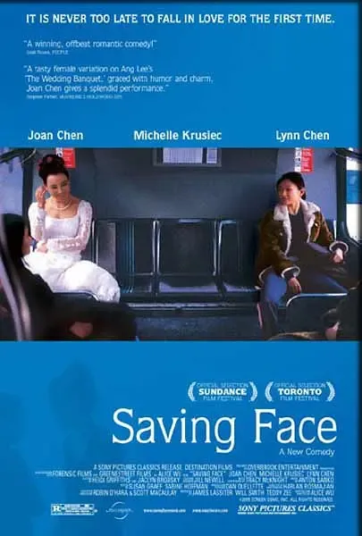
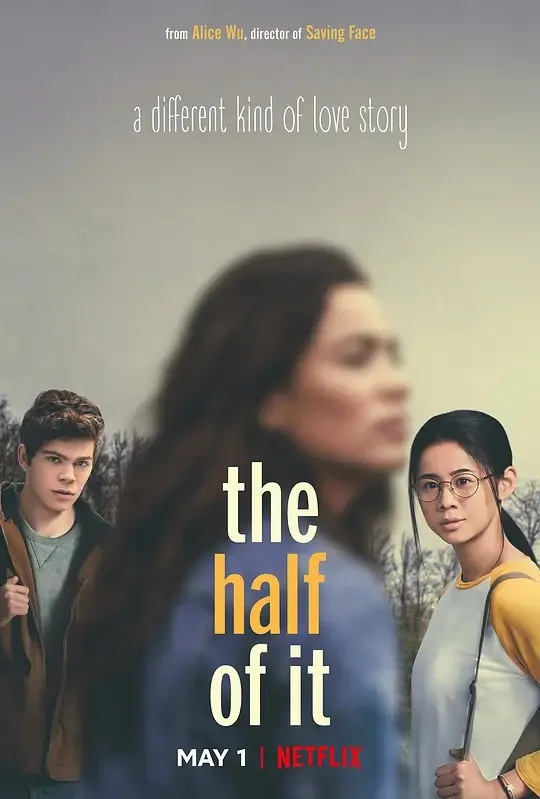

Summer
1990年，20岁的美籍华裔伍思薇完成了在斯坦福的本科学业，接着继续在母校念了硕士和博士，然后进入微软，成为了一名软件工程师，这可以称得上是一份会令像我这样的工科生羡慕的履历。但是，事情发展到这里还没完，微软工程师伍思薇其实还有一个作家梦，她开始尝试写小说。我们可以合理推测她上班摸鱼，但这不重要，因为她写着写着，觉得拍电影更对味儿，于是就报了一个剧本创作班，上了十二周课，写了一个剧本，然后从微软辞职，跑去纽约学电影，最后把那个剧本拍了出来，得了42届金马观众票选最佳。
这部电影叫 《面子》(Saving Face, 2004)，在当年的多伦多电影节上映。电影将背景设置在唐人街的华人圈子中，主线是从小在美国长大的华裔女主Wil向思想传统的中国母亲出柜的经历，穿插着Wil和同为美籍华裔的女友Vivian之间的感情线以及Wil寡居的母亲交了年轻男友还不慎未婚先孕等剧情线。

其实写到这里，我本来还想再总结概括一下剧情的，但我又发现自己真的从心底里讨厌“介绍剧情”这件事，竟然比写开题报告还憋得久诶。呃，那就这样设想一下吧——Wil一方面从小生长在一个传统的中式家庭中，拥有保守的妈妈、七大姑八大姨、唐人街爱嚼舌根的街坊邻居们等一批宝贵财富，另一方面接受西方教育，职业是医生，mentor是女朋友的爸爸，女朋友是喜欢现代舞但迫于家里要求不得不跳芭蕾的专业舞者。Wil的妈妈，同样拥有更保守的爸爸妈妈、死了挺久的前夫、出柜的女儿Wil、和Wil一样大的新男友、新男友未出世的儿子/女儿、唐人街爱嚼舌根的街坊邻居们等一批宝贵财富。电影就是围绕她俩以及她俩身边的人展开的，如果有兴趣可以去看看电影。
喜欢李安的朋友看到这里，可能已经嗅出一种熟悉的味道了。《面子》当时被称为 “女版《喜宴》”，伍思薇也被认为“有望成为李安接班人”。我个人觉得这部片子更像是《喜宴》和《饮食男女》的综合应用，伍思薇确实具有非常明显的“李安式细腻”，不过相较于李安的留白，伍思薇显得更具幽默感，她用非常轻松的方式来叙事，让观众遗忘了这些人物身上的枷锁有多沉重。电影的结尾美好到了虚假的地步，我以前看的时候其实是非常不喜欢的，但现在回想起来倒也不是太违和，或许只是因为我讨厌“王子公主从此幸福地生活在一起”吧。
《面子》是一部成功的处女作，这当然也会引起人们对伍思薇创作理念的好奇。她会在之后的作品中延续《面子》所传达出的轻松感和积极性吗？她的下一个剧本还会像《面子》一样细腻又温情吗？她还会继续讨论美籍华裔的身份寻求问题吗？影迷们很期待她下一步的动作，但她真的很过分，过了16年才搞出第二部电影（相比之下我更新真的很频繁），也就是说，如果2004年的我是八十岁，那早在 《真心半解》(The Half of It, 2020) 上映之前，我就已经带着上述问题与世长辞了，然后就会变成一个充满遗憾的鬼。
《真心半解》的女主角Ellie，同样是一个美籍华裔学霸，不过是青春期的，junior版本的那种。她性格孤僻，被美国同学们排挤，但她学习好，所以还是会有人付钱让她帮写essay什么的。有一天，头脑简单四肢发达憨得要命的男主Paul付钱给她，让她帮他追女神。好巧不巧，Ellie也喜欢该女神，但是基于种种复杂的心理原因和简单的经济问题，她还是接下了这个活，故事就此展开，一样，如果感兴趣可以去看看电影。

一直以来，我是不太希望出现这种情况，即，16年的风云变幻让伍思薇的风格从“李安型”转向“卡朋特型”，当然这里没有说卡朋特或者cult不好的意思，我不配也不敢。不过总之，非常幸运，《真心半解》仍然像夏夜里的晚风一样，延续了前作温柔且细腻的风格，再加上本片的背景本就不甚沉重，青涩的情愫会让人忍不住露出姨母表情之类的。我个人最喜欢的地方在于，影片明确地指出了“世界上的感情有很多种”这件事，“很多”就是比亲情、友情、爱情这种形式的划分要多得多的意思。
这句话听起来很简单，真的把它放到世俗环境中，其实很多人是难以共情的。举个简单的例子，以前上课的时候，有一次说到《了不起的盖茨比》，一个男生非常坚定地认为Daisy对Gatsby没有爱情，她只是爱慕虚荣。怎么说呢，我承认这是一种理解方式，但我个人觉得“爱情”这个词的定义本来就很奇怪，一份感情要满足哪些标准才可以称之为爱情？可以量化吗？Daisy对Gatsby的一切反应，用一句“爱慕虚荣”就可以概括吗？我感觉，这种难以共情，与其说是难以认同人物形象，倒不如说是，难以理解人性的复杂程度。《真心半解》中的各种感情虽然很难用某个词一以概之，但不可否认，它们都能让观众感受到爱的存在。在真实的世界里，人的情绪倒有点像女巫的锅，或者太上老君的炼丹炉，我们很难说清楚里面混了多少东西，每样东西又是多少剂量。我很高兴《真心半解》能够指出这种共情是必要的，虽然电影几乎只涉及到了积极的感情。
看到这里，或许你会好奇为什么两部片子中女主角的设定如此相像。答案很简单啦，根据伍思薇的解释，Wil和Ellie，她们是对身份感到迷茫的美籍华裔，是念书很厉害的学霸，是女性同性恋（或许只能称Ellie是“会对女性产生情愫”），她们或多或少，也都是伍思薇自己。两部影片的故事主线都来源于伍本人的生活，这可能也是剧本巨大魅力的来源之一。我们不知道她什么时候才会拍下一部电影，也不知道她的下一个故事是否还能够打动人心，但这种好奇感和期待感本身，对一个影迷而言或许就已经足够珍贵了。
More
欢迎关注公众号：候场杂记，分享我们的不定期"影评"